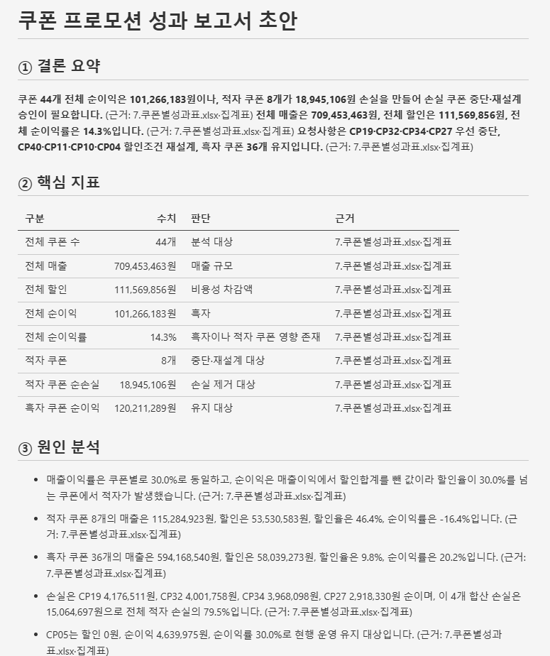

// 실습 4 · 임원용 1페이지 보고서
1 · 보고서 초안 쓰기¶
실습 3에서 찾아낸 숫자들을 이제 대표님이 읽을 문서로 바꿉니다. 문제는 우리는 이 데이터를 오래 봤지만 대표님은 오늘 처음 본다는 것. 보고서를 받아 든 상사는 속으로 딱 두 가지를 묻습니다. "결론이 뭔데? 나한테 뭘 해달라는 건데?" 이 답이 첫 세 줄에 나와야 합니다.
모든 숫자에는 반드시 출처를 명시합니다. 숫자 하나가 의심받는 순간 보고서 전체의 신뢰가 무너지기 때문입니다.
요령이 하나 있습니다. 사람에게 보고하러 갈 때 상사 성향부터 파악하듯, 폴더의 프로필·양식 두 파일을 AI에게 먼저 읽히세요. 누구에게 어떤 톤으로 몇 장을 써야 하는지 AI가 알고 시작합니다.
직접 시켜보세요¶
여러분 문장으로 아래 체크리스트가 빠지지 않게 시킵니다.
프롬프트에 꼭 담을 것 ✅¶
- 읽을 대상 — 보고 대상 프로필 + 보고서 양식 두 파일을 먼저 읽고 반영
- 근거 데이터 — 숫자는 성과표(
7.쿠폰별성과표.xlsx)에서만, 문장마다(근거: 파일·시트) - 두괄식 — 첫 3줄에 "결론이 뭔지 / 무엇을 해달라는지"
- 양식 5블록 — 결론요약·핵심지표표·원인분석·건의·출처 순서 그대로
- 분량 — 1페이지, 상세 표·계산은 첨부로 (본문은 결론·액션만)
이런 건 빼세요 ❌¶
- 자료에 없는 표현 지어내기 ("업계 1위", "고객 반응 폭발")
- 근거 없는 형용사 ("압도적"·"최고" → 숫자 차이로)
- 시간순 나열 ("먼저 파일을 합치고, 다음에…") — 상사가 궁금한 순서로
- 건의사항 빼기 (분석만 하고 끝내면 미완성)
예시 프롬프트¶
여러분 문장을 먼저 보낸 뒤에 열어보세요.
이렇게 시킬 수 있습니다
lab4 폴더의 보고대상_프로필.md와 보고서_양식.md를 먼저 읽고, 그 성향과 양식에 맞춰
같은 폴더의 쿠폰별성과표.xlsx를 근거로 대표이사용 1페이지 보고서 초안을 써줘.
- 첫 3줄에 결론과 요청사항을 두괄식으로.
- 양식의 5블록(결론요약·핵심지표표·원인분석·건의·출처) 순서 그대로.
- 모든 숫자 문장 끝에 (근거: 파일명·시트명)을 붙여.
- '압도적'·'최고' 같은 형용사는 쓰지 말고 숫자 차이로 표현해.
- 자료에 없는 내용은 지어내지 말고, 분석에서 그치지 말고 건의사항을 꼭 넣어.
결과는 lab4 폴더에 report.md 한 파일로 저장해줘.실행 예시¶
이렇게 나오면 됩니다

체크포인트¶
- 첫 3줄에 결론과 요청사항이 있다 (두괄식)
- 양식 5블록이 순서대로 다 있다
- 숫자 문장마다
(근거: 파일·시트)가 붙어 있다 - 건의사항이 들어 있고, 본문이 1페이지를 넘지 않는다